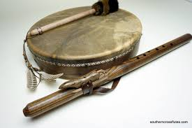
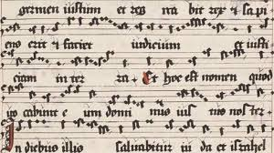
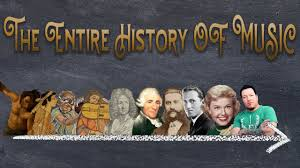

From ancient rituals to digital streams—highlights across eras with pictures and illustrations.


Prehistory & Antiquity
Early flutes, drums, and harps emerged for ritual, storytelling, and dance.
Classical Civilizations
Greek modes, Roman ensembles, and instruments like the aulos and lyre.
Medieval & Renaissance
Chant to polyphony; notation blossomed; lutes, recorders, and viol consorts.
Baroque to Romantic
Orchestras expanded; forms like concerto and symphony flourished (Bach, Mozart, Beethoven).
Global Exchanges
Trade and migration blended traditions—African rhythms influenced the Americas and beyond.
20th Century & Recording
Jazz, blues, rock, and electronic music rose with radio, records, and studios.
Digital & Streaming Era
DAWs, sampling, and global streaming reshaped how music is made and heard.
Documentary
Watch a concise overview—from ancient sound making to present-day music.

Read concise overview—from ancient sound making to present-day music.
Music has evolved from a primal instinct for rhythm and communication into a highly sophisticated global industry driven by digital innovation.
Ancient & Prehistoric Origins (c. 40,000 BCE – 500 CE)
Earliest Instruments: Music predates writing; the oldest known instruments are flutes made from bird bones and mammoth ivory found in Germany, dated to over 40,000 years ago.
Civilizational Music: Early civilizations in Mesopotamia, Egypt, China, and India used music for rituals, education, and theater.
The Greeks: Figures like Pythagoras (c. 500 BCE) explored the mathematical foundations of musical scales, while Aristotle described sound moving in waves.
Western Eras & Notation (c. 500 CE – 1900)
Medieval (500–1400): Dominated by Gregorian chant, this era saw the development of musical notation (neumes), allowing music to be systematically documented and shared.
Renaissance & Baroque (1400–1750): Music grew in complexity through polyphony (multiple melodies) and the invention of the printing press. The Baroque era introduced the harpsichord and masters like Bach and Vivaldi.
Classical & Romantic (1750–1900): Composers like Mozart and Haydn emphasized clarity and structure, while Beethoven bridged the gap into the Romantic era, which focused on intense personal emotion and individualism.
The Recorded & Modern Era (c. 1900 – 2026)
Recording Revolution: Thomas Edison’s phonograph (1877) allowed sound to be captured and reproduced for the first time.
Mass Media & Genres: Radio and television propelled jazz, rock, hip-hop, and pop into global dominance. Innovations like the electric guitar and multitrack recording (led by artists like The Beatles) transformed the studio into a creative instrument.
Present-Day Digital Landscape (2020s–2026):
Democratization: Digital Audio Workstations (DAWs) and social media platforms allow independent artists to produce and distribute music globally from home.
Immersive Tech: Spatial audio (e.g., Dolby Atmos) and haptic feedback create three-dimensional soundscapes in venues like the Las Vegas Sphere.
AI Integration: As of 2026, Artificial Intelligence is an established tool for songwriting, mastering, and real-time audio optimization, pushing the boundaries of independent creation.
Explores the history of music and musical instruments.